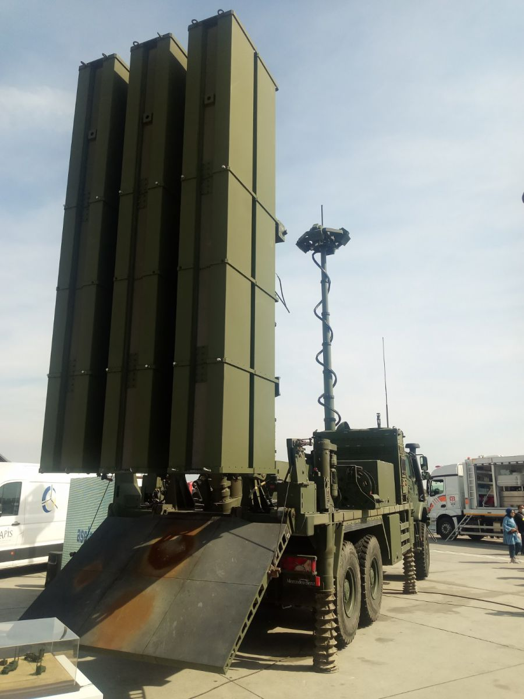
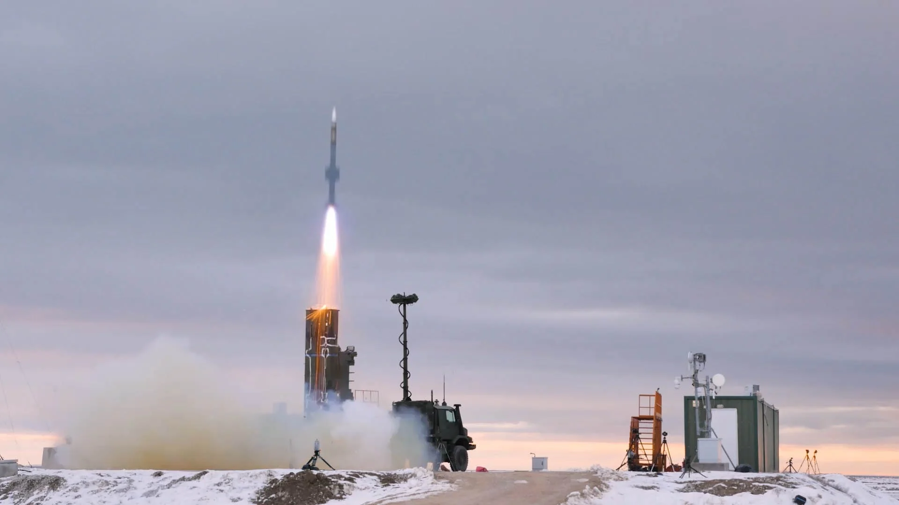
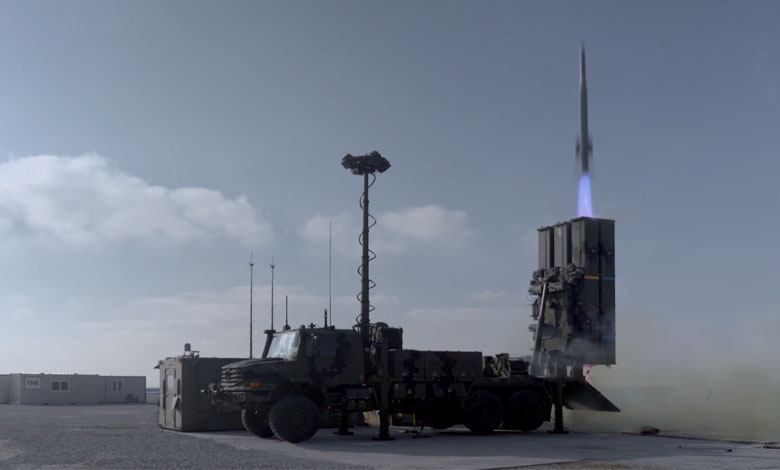

RF Arayıcı Başlıklı Orta İrtifa Hava Savunma Füzesi
HİSAR-RF, HİSAR orta irtifa hava savunma ailesi içinde RF arayıcı başlık kullanan füze çözümüdür. Orta irtifa hava savunma görevlerinde; sabit kanatlı ve döner kanatlı hava platformları, seyir füzeleri, havadan karaya füzeler ve İHA’lara karşı kullanılmak üzere geliştirilmiştir.
Sistem yaklaşımında hedef tespit, takip, komuta kontrol ve füze lançer unsurları entegre çalışır. RF arayıcı başlık kullanımı, özellikle terminal safhada hedefe hassas yönelim ve önleme kabiliyetini güçlendirir.
HİSAR-RF; dikey atış yapısı, 360 derece angajman yaklaşımı, çoklu angajman desteği ve katmanlı hava savunma içinde kullanılabilen mimarisiyle modern hava savunma ihtiyaçlarına cevap vermek üzere tasarlanmıştır.
25+ km
15+ km
4.6 m
185 mm
RF Arayıcı Başlık
Dikey / 360°
| Füze Tipi | Orta irtifa hava savunma füzesi |
| Adı | HİSAR-RF / HİSAR-O (RF) |
| Görev Alanı | Orta irtifa hava savunması, üs ve tesis savunması, birlik hava savunması |
| Hedef Türleri | Sabit kanatlı uçaklar, döner kanatlı uçaklar, seyir füzeleri, İHA’lar ve havadan karaya füzeler |
| Azami Önleme Menzili | 25+ km |
| Azami Önleme İrtifası | 15+ km |
| Füze Uzunluğu | 4.6 m |
| Füze Çapı | 185 mm |
| İlk Yönelim | İlk yönelim güdümü |
| Ara Safha Güdüm | Ataletsel seyrüsefer ve veri bağı |
| Terminal Güdüm | RF arayıcı başlık |
| Harp Başlığı | Yüksek infilaklı parçacık etkili |
| Motor | Çift darbeli katı yakıtlı roket motoru |
| Tapa Yapısı | Çarpma ve yaklaşma tapa |
| Yönlendirme | İtki vektör kontrol sistemi |
| Atış Yapısı | Dikey atış kabiliyeti ile 360° tehdit imha yaklaşımı |
| Platform Uyumu | Tekerlekli ve paletli kara araçları ile deniz araçları |
| Kanister / Arayüz | Ortak kanister ve göbek bağı arayüzü mimarisi |
| Angajman Yapısı | Çoklu angajman ve ardışık ateşleme |
| Görev Koşulları | Gece-gündüz ve olumsuz hava koşullarında görev yapabilme |
| Dost-Düşman Tanıma | IFF entegrasyonu |
| Entegre Hava Resmi | Komuta kontrol altyapısı ile entegre hava resmi üretimi |
| Öne Çıkan Özellik | RF terminal güdüm, dikey atış ve 360 derece koruma yaklaşımını birleştiren yerli orta irtifa füze çözümü |
| Sistem Mim arisi | Dağıtık ve esnek hava savunma mimarisi |
| Komuta Kontrol | Gelişmiş atış kontrol ve komuta kontrol altyapısı |
| Kullanım Şekli | Batarya ve takım seviyesinde entegre kullanım |
| Hava Savunma Katmanı | Orta irtifa katmanında önleme |
| Entegrasyon Kabiliyeti | IIR ve RF füze kullanan lançer mimarileriyle birlikte görev yapabilme |
| Uzaktan Kontrol | Uzaktan kontrol ve dağınık konuşlanma desteği |


